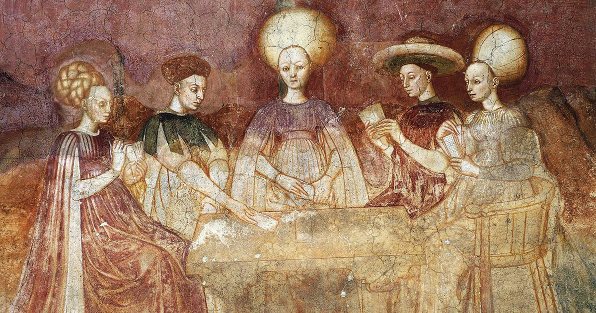
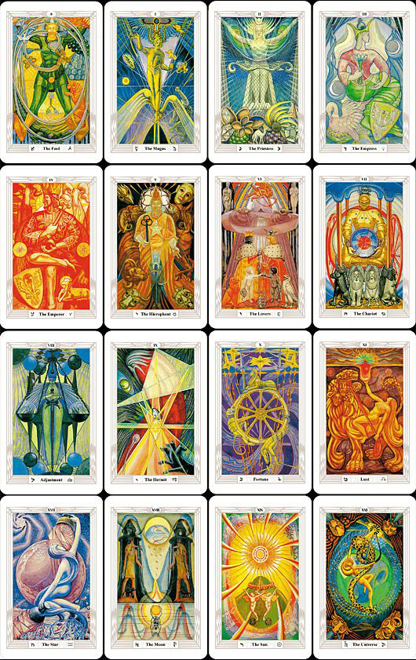
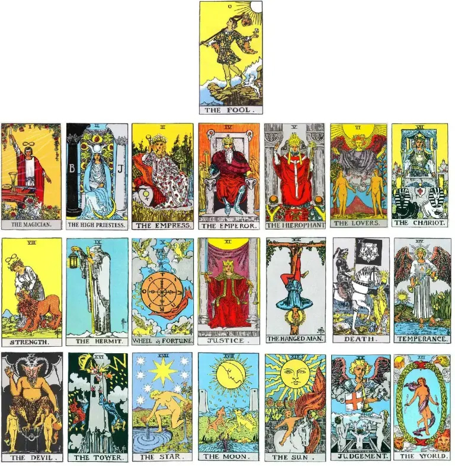
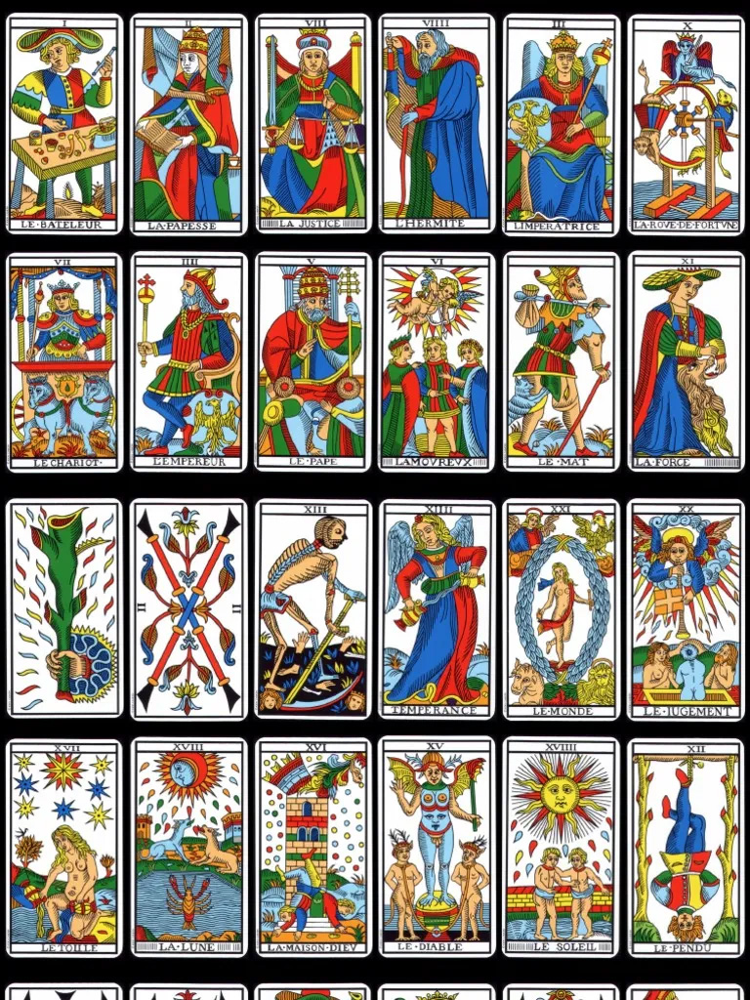

Raíces del tarot
El susurro de los arcanos
Origen

El tarot habita en ese delicado punto donde la historia se entrelaza con el misterio. Sus primeras huellas aparecen en Europa entre los siglos XIV y XV, y se cree que fue en Italia donde tomó forma como el tarocchi, un juego de cartas ilustradas destinado a la nobleza. En aquel entonces no era un instrumento de adivinación, sino un entretenimiento, aunque sus imágenes ya comenzaban a susurrar significados más profundos.
Antes de ser tarot, fue Trionfi: triunfos. Un nombre que evoca alegorías como el amor, el tiempo, la muerte y la eternidad, reflejo de una visión del mundo donde todo parecía estar unido por hilos invisibles. Con el paso del tiempo, el nombre cambió y, hacia el siglo XVI, comenzó a conocerse como tarot, rodeado de un aura más enigmática. Su origen, sin embargo, nunca fue del todo claro. Algunos lo vincularon con Egipto y saberes antiguos; otros lo imaginaron como un viajero silencioso que atravesó culturas antes de asentarse en Europa.
Así, el tarot dejó de ser solo un juego para convertirse en un lenguaje simbólico: 78 cartas divididas en Arcanos Mayores, que representan arquetipos universales, y Arcanos Menores, ligados a lo cotidiano, a lo íntimo y humano. Con el tiempo, sus imágenes se transformaron, adaptándose a distintas creencias sin perder su esencia.
Hoy, el tarot no pertenece a un solo origen ni a una única verdad. Es espejo y camino, pregunta y reflejo: no predice lo que vendrá, sino que revela lo que ya habita en nosotros.
Figuras clave
Antoine Court de Gébelin
fue clave en transformar el tarot de juego a sistema simbólico. En su obra Le Monde primitif (1773) propuso que el tarot provenía de Egipto y que sus cartas ocultaban significados metafísicos ligados a lo sagrado.
Aunque no era un iniciado en saberes esotéricos, sus ideas marcaron el imaginario del tarot que conocemos.
Etteilla (Jean-Baptiste Alliette)
Poco después de Gébelin, emergió Etteilla como el primer lector de tarot y pionero de la adivinación. Ocultista francés, popularizó la lectura del tarot, lo vinculó con la astrología y los Cuatro Elementos, y creó la primera baraja pensada para fines esotéricos. En 1770 publicó su obra sobre cómo usar las cartas, cada carta adquirió significados y comenzó a leerse en posición directa e invertida.
Éliphas Lévi Zahed
En el siglo XIX, se convirtió en una figura clave del esoterismo. Unió el tarot con la Cábala, asociando los Arcanos Mayores con las letras hebreas.
Presentó el tarot como el Libro de Thoth, enriqueciendo su simbolismo y sentando las bases del tarot.
Aleister Crowley
Hizo la baraja Thot, cada ilustración expresa su visión esotérica. Más que imágenes, son portales simbólicos: un grimorio visual donde su pensamiento une lo racional con lo intuitivo.
Pamela Colman Smith y Arthur Edward Waite
Arthur Edward Waite, junto a la artista Pamela Colman Smith, dio vida a la baraja Rider-Waite, una de las más influyentes del tarot moderno.
Miembro de la Orden de la Aurora Dorada, Waite aportó una visión mística y espiritual que conectó con Pamela, quien ilustró cada arcano siguiendo sus indicaciones y su simbolismo astrológico. Juntos crearon una obra que marcó profundamente el tarot contemporáneo.

Tipos de mazo
Hablaré de 3 de los mazos mas tradicionales y conocidos: el tarot de marsella, el tarot de rider-waite y el tarot de thot.

Tarot de Thot
El Tarot de Thoth, creado por Aleister Crowley y pintado por Lady Frieda Harris (1938–1943), es una reinterpretación esotérica del tarot basada en la Cábala, la astrología y la alquimia.
Introduce nuevos nombres y significados, como The Aeon o Lust, y, más que una herramienta adivinatoria, funciona como un sistema simbólico para la meditación y el autoconocimiento.
Tarot de Rider-waite
A inicios del siglo XX nació el Tarot Rider-Waite, creado por Arthur Edward Waite y la artista Pamela Colman Smith, miembros de la Orden de la Aurora Dorada. Publicado en 1909 en Londres, dio vida a una nueva visión del tarot.
Esta baraja marcó una revolución: fue la primera en ilustrar todos los Arcanos Menores con escenas simbólicas y también introdujo cambios en los Arcanos Mayores, como el intercambio entre La Justicia y La Fuerza.


Tarot de Marsella
El Tarot de Marsella no nació en Marsella, sino que es una adaptación francesa de antiguas barajas italianas del Renacimiento, originadas hacia 1430 en ciudades como Milán o Florencia. Llegó a Marsella en el siglo XVII, donde se consolidó su estilo.
El nombre fue dado en el siglo XIX por ocultistas, y en 1930 Paul Marteau popularizó su versión moderna, que sigue siendo la referencia actual.